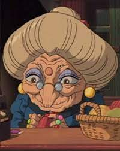

Zeniba
Zeniba (revelada como avó de Chihiro Ogino) é uma bruxa, assim como a irmã gêmea mais velha de Yubaba, no filme "A Viagem de Chihiro".
Personalidade
Quando ela aparece pela primeira vez na segunda metade do filme, ela parece ser tão perigosa quanto sua irmã. Depois de causar estragos no escritório de Yubaba, ela avisa Chihiro Ogino para ficar calada sobre o incidente ou ela vai lhe arrancar a boca. Quando Chihiro se recusa a entregar Haku e o selo dourado, ela fica brava e grita com Chihiro, informando-a de que Haku é um ladrão ganancioso que precisa ser punido, e que ela colocou uma maldição sobre o selo dourado para que quem o roubar morra. Ela também parece não gostar particularmente de seu sobrinho, Boh, fato mostrado quando goza com o peso e a baixa inteligência dele.
Quando Chihiro visita seu chalé no fundo do pântano com o Sem rosto, Boh e o pássaro de Yubaba a fim de devolver o selo dourado e pedir desculpas em nome de Haku, sua verdadeira natureza é revelada como uma senhora idosa gentil e prestativa. Ela dá conselhos encorajadores a Chihiro sobre como lembrar o nome de Haku e mais tarde perdoa Haku pelo roubo de seu selo. Ela parece formar um vínculo com Chihiro, fato visto quando Chihiro se refere a Zeniba como "vovó" a seu pedido.
Aparência física
Por ser gêmea de Yubaba, Zeniba tem uma aparência idêntica à de sua irmã: uma cabeça desumanamente grande com longos cabelos loiros amarrados em um "pão", um rosto enrugado consistindo de um nariz grande em gancho, um ponto vermelho entre os olhos, além dela usa uma sombra azul, grandes brincos dourados e um vestido azul escuro com um broche de rubi no colarinho. A única característica que distingue as irmãs é que Zeniba usa óculos, o que implica que ela pode ser clarividente, como evidenciado pelo fato de que ela só os usa quando tece em sua casa de campo.
Habilidades
Zeniba é uma bruxa extremamente poderosa cuja magia poderia facilmente rivalizar com a de sua irmã gêmea mais nova, Yubaba. Kamaji também comentou certa vez que ela era "uma bruxa perigosa".